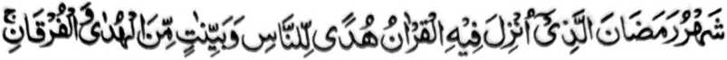

MADADALEMON
MANGA KALBIHAN O RAMADHAN
PANAGAYANAN
PINTO - 1 So Manga Kalbihan ago Balas o Kaphowasa
1. So Kapephangoyati ko manga tao sabap ko mita-taralo a manga balas ko kanggalebek sa mbaram-barang a manga pipiya ‘Amaal igira Ramadhan
2. So kinibegan ko lima a miyasalebo a limo sangka-iya Ummat
3. So telo a manga tao a inipaninta o Jibrail
4. So kipembegan ko limo, rila, go so kapakama-radika ko Naraka, go so katharima-a ko du’a
5. So kapakamaradika ko Naraka o tao o di na so Kakhatatap iyan non
6. So katatangked a katharima-a ko pangeni (Du’a) o telo a manga tao
7. So manga balas o Allah ko Sehri (kakan igira Ipopowasa)
8. So kakhabatal o manga balas o kaphowasa sabap ko kibagaken ko manga sarat iyan
9. So kababaloy o powasa a kelong (ko marata)
10. So kapakaboka sa salongan ko Ramadhan na di ron phakatapal so kaphowasa sa Nafl ko tenday o kaoyag-oyag
PINTO-2 LAYLATUL QADR (So Kagagawi-i a Bager)
1. So kaperila-i ko miya-ona manga dosa sabap ko simba ko soled o Laylatul Qadr
2. So Laylatul Qadr na tomo a di so sanggibo a manga olan-olan
3. So kapethoron o Jibrail ko kagagawi-i o Laylatul Qadr go so babaya o Allah ko oripen Niyan a maonoten
4. So Laylatul Qadr na matatago ko mori a sapolo Gawi-i ko Ramadhan
5. So katetendo a katatago-an ko Laylatul Qadr na miya-angkat sabap ko kiyaphawala o dowa katao a Muslim
6. So saba-ad ko manga tanda ago papata o Laylatul Qadr
7. Matetendo a Du’a ko masa a Laylatul Qadr (A inipando o Nabi (Sallallaho Alaihi Wasallam))
PINTO - III I'TIKAF (Kasibay sa Masjid)
1. So Nabi (Sallallaho 'Alaihi Wasallam) na so-minibay sa Masjid ko gi-i niyan kambabano-ga ko Laylatul Qadr
2. So I'tikaf na kapakalidas ko manga dosa ago okit a kapakakowa sa manga balas
3. So kiyatepheda o Ibn Abbas ko I’tikaf iyan pantag bo sa kathabangi niyan ko sakatao a kareregenan
4. So makampet a osayan ko manga kalbihan ago manga balas o Powasa ago so Eid